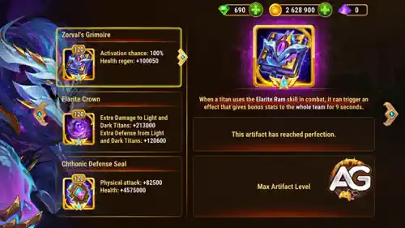

Pallant Titan Guide: Elarite Earth Tank Hero Wars Alliance
- By: Alexandre Domingos. .
Pallant is the Elarite Titan Earth teams were waiting for: a true Front Line tank with enormous Health and a disruptive ultimate. Instead of simply absorbing attacks, he turns the nearest enemy into a projectile, knocking that Titan backward and damaging every opponent caught in the path.
My first impression is that Pallant can strengthen an already powerful Earth core while opening the door to complete Elarite teams. In this guide, I will show you how Elarite Ram works, where to invest first, which Fire Titans punish him, and what the supplied max-level tests really tell us.

Pallant belongs to both the Elarite and Earth elements. That dual identity lets him lead familiar Earth Titans such as Angus, Eden, Verdoc, Sylva, and Avalon while also forming an early Elarite core with Alecto and Orm.
He is built around positioning control. Elarite Ram attacks the nearest enemy, pushes that target through the formation, and punishes opponents who stand in the collision path. This makes Pallant more than a wall: he can disrupt the enemy line and create area pressure from the Front Line.

📋 Pallant Guide - Table of Contents
- Who Is Pallant?
- Pallant Max Stats
- Pallant Overall Rating in the Meta
- Pallant Pros and Cons
- Pallant Skills Guide
- Best Skin for Pallant
- Pallant Artifact Priority
- How to Counter Pallant
- Best Teams for Pallant
- Conclusion
Who Is Pallant in Hero Wars Alliance?
Pallant is a Front Line tank with the Elarite and Earth elements. His job is to protect the formation with a massive Health pool, then use Elarite Ram to force the nearest enemy backward. The moving target becomes the source of collision damage against its own allies.

- Role: Tank
- Element: Elarite + Earth
- Position: Front Line
- Synergy: Earth Titans
For Earth teams, Pallant adds another durable frontliner with active control. For Elarite teams, he fills the tank role beside Alecto's damage and Orm's support, leaving two flexible slots for Super Titans until more Elarite allies arrive.
Pallant Max Stats - Hero Wars Alliance
These are Pallant's maximum stats at level 120, using the values supplied in the Pallant data file:
- Health: 16,213,343
- Physical Attack: 426,578
- Extra Defense from Light and Dark Titans: 120,600
- Extra Damage to Light and Dark Titans: 213,000
The standout number is Pallant's 16,213,343 Health. His Physical Attack is lower than that of a dedicated marksman, but Elarite Ram uses large 200% and 300% multipliers, so every Physical Attack upgrade still has a meaningful effect.
Pallant Pros and Cons - Hero Wars Alliance
✅ Pros
- Massive Health pool for Front Line tanking
- Knockback disrupts enemy positioning
- Collision damage can pressure several enemies
- Excellent synergy with Earth Titans
- Provides the tank role for early Elarite teams
❌ Cons
- Only one active skill in the supplied data
- Damage depends on enemy positioning and collision paths
- Fire teams are his main listed weakness
- Elarite Crown bonuses only work against Light and Dark Titans
Pallant Skills Guide - Hero Wars Alliance
Elarite Ram is easy to recognize but has two separate damage events. Understanding that difference is the key to using Pallant correctly.
Elarite Ram (Ultimate)
In-game description: Attacks the nearest enemy and knocks them back. While in motion, the opponent deals damage to all enemies in their path.
Target: Nearest enemy
Knockback damage: 853,157
Formula: (200% of Physical Attack).
Collision damage: 1,279,735
Formula: (300% of Physical Attack).
Skill Explanation: First, Pallant hits the nearest enemy and forces that Titan backward. This opening hit deals the knockback damage. While the target is moving, every enemy caught in its path can receive the larger collision damage.
The calculation uses Pallant's maximum 426,578 Physical Attack. The displayed game values are 853,157 for the knockback and 1,279,735 for a collision; the one-point differences from direct multiplication come from the game's internal rounding.
Knockback: (426,578 x 200%) = 853,157 displayed damage
Collision: (426,578 x 300%) = 1,279,735 displayed damage
Why it matters in PVP: Elarite Ram is strongest when enemy Titans are grouped behind their tank. Pallant can push the nearest target through that formation, creating area damage while disturbing the enemy's spacing. Against a spread-out lineup, the first hit still works, but fewer enemies may be caught by collisions.

Alexandre's Strategy Note: Do not judge Pallant only by the damage on the nearest target. His real value is the combination of tanking, displacement, and collision pressure. The more enemies lined up behind the front Titan, the more dangerous Elarite Ram becomes.
Best Skin for Titan Pallant - Hero Wars Alliance
Both Pallant skins add the same amount of Health at level 60. The visual order is preserved below, while the priority reflects the most efficient upgrade path for a tank.

Default Skin
Health: +2,627,975
The Default Skin directly strengthens Pallant's main job: surviving on the Front Line long enough to use Elarite Ram repeatedly.
Evolution Priority for PVP: Very High - Upgrade this first because Health improves Pallant in every matchup and establishes his core durability.
Evolution Priority for Dungeon: Very High - More Health gives a tank better consistency in extended Dungeon battles.

Primordial Skin
Health: +2,627,975
The Primordial Skin gives exactly the same Health total as the Default Skin. It is a powerful second durability investment after the first skin is developed.
Evolution Priority for PVP: High - The stat is excellent, but it comes second because the Default Skin already provides the same benefit.
Evolution Priority for Dungeon: High - Build it after the Default Skin to stack even more Health for long fights.
Skin Priority Summary:
1st: Default Skin - Health for Pallant's essential tank durability.
2nd: Primordial Skin - the same Health bonus, added after the first skin.
Pallant Artifact Evolution Priority Hero Wars Alliance
Pallant uses three Elarite artifacts. Keep their visual order in mind, but for investment I value the Seal first for universal tank stats, the Weapon second for team regeneration, and the Crown third for specific Light and Dark matchups.


Zorval's Grimoire (Weapon Artifact)
Activation chance: 100%
Team buff duration: 9 seconds
Health Regen: +100,050
When Pallant uses Elarite Ram, Zorval's Grimoire triggers a team-wide Health Regen bonus for 9 seconds. At level 120, its activation chance is 100%, so every ultimate creates a reliable sustain window for all five Titans.
Evolution Priority for PVP: High - Guaranteed team regeneration is valuable, especially in Earth teams built to survive and control longer battles.
Evolution Priority for Dungeon: Very High - Team-wide Health Regen is extremely useful when durability across repeated fights matters.

Elarite Crown (Crown Artifact)
Extra Damage to Light and Dark Titans: +213,000
Extra Defense from Light and Dark Titans: +120,600
The Elarite Crown makes Pallant stronger against Light and Dark Titans on both offense and defense. It does nothing against Earth, Water, or Fire opponents, so its general priority must remain below the universal Seal and the team-buffing Weapon.
Evolution Priority for PVP: Medium - Strong in two elemental matchups, but there are five Titan element groups and the bonus is inactive against three of them.
Evolution Priority for Dungeon: Medium - Upgrade it after the Weapon and Seal because its value depends on the enemy element.

Chthonic Defense Seal (Seal Artifact)
Physical Attack: +82,500
Health: +4,575,000
This is Pallant's most universal artifact. The large Health bonus reinforces his tank role, while Physical Attack increases both parts of Elarite Ram.
Formula impact: (+82,500 x 200%) = +165,000 knockback damage, and (+82,500 x 300%) = +247,500 collision damage.
Evolution Priority for PVP: Very High - Health and Physical Attack work in every matchup and improve both his main role and his skill.
Evolution Priority for Dungeon: Very High - The universal durability and damage make this Pallant's most dependable artifact across repeated fights.
Artifact Priority Summary:
1st: Chthonic Defense Seal - Health plus Physical Attack in every matchup.
2nd: Zorval's Grimoire - guaranteed team Health Regen after Elarite Ram.
3rd: Elarite Crown - strong against Light and Dark Titans, but situational.
How to Counter Titan Pallant - Hero Wars Alliance
In my battle tests Fire Titans are Pallant's main weakness. The most important counter lineup is Moloch, Vulcan, Araji, Asherona, and Ignis, which defeated Pallant's Earth at maximum level. The Titans below are in alphabetical order.

Araji: In the tested Fire lineup, Araji supplies the high offensive pressure needed to break through Pallant's huge Health pool. He is most effective here as part of the complete Fire composition rather than as a guaranteed solo answer.

Asherona: Asherona strengthens the tested Fire core and adds pressure that helps the lineup finish Pallant before repeated Elarite Ram activations and weapon regeneration can stabilize his Earth allies.

Ignis: Ignis amplifies the Fire team's offensive tempo. That extra pressure is important against a tank with more than 16 million Health because slow damage gives Pallant more time to control the line and trigger team regeneration.

Moloch: Moloch gives the counter team its own Front Line presence, preventing Pallant from freely controlling fragile damage dealers. His role is to hold the formation while the rest of the Fire team applies pressure.

Vulcan: Vulcan adds another source of sustained to Fire damage together with Araji and Asherona, he helps convert Moloch's protection and Ignis's support into enough damage to overcome Pallant.
Best Teams for Titan Pallant - Hero Wars Alliance
Pallant's most proven home is the Earth team. These three lineups let you choose between Sylva's damage, Angus's additional Front Line pressure, and Avalon's defensive support according to the enemy team.
Team 1 - Pallant Earth Team
This is the main team from the supplied max-level tests. Pallant tanks, Angus adds Front Line pressure, Verdoc supports the Earth core, Eden brings control and burst, and Sylva contributes sustained Earth damage.
Team 2 - Pallant, Sylva and Avalon Earth Team
In this lineup, Pallant completely replaces Angus as the tank, allowing the team to add Avalon while keeping Sylva as its main damage dealer. Sylva is a great Light killer with her third skin. Avalon provides extra defense against Darkness with her third skin, as well as shielding and healing. Because an Elarite tank with resistance to Light and Darkness is already on the Front Line, Avalon's shields and healing can be even more important than her additional Darkness defense.
Team 3 - Pallant, Angus and Avalon Earth Team
This defensive Earth lineup places Angus beside Pallant on the Front Line and replaces Sylva with Avalon. Angus adds area pressure and a second durable tank, while Avalon supplies shields, healing, and additional defense against Darkness. Eden remains the team's main source of control and burst damage, with Verdoc supporting the Earth core.
Team Member Roles
- Pallant: Elarite and Earth tank with knockback and collision control. He can replace Angus completely or fight beside him.
- Angus: Earth tank with area pressure beside Pallant in the first and third teams.
- Verdoc: Key member of the current Earth core.
- Eden: Earth Super Titan with powerful control and burst.
- Sylva: Main damage dealer and a strong Light killer after unlocking her third skin.
- Avalon: Shields and heals the team, while her third skin provides additional defense against Darkness.
Team Weaknesses and Considerations
Weak Against: The complete Fire lineup of Moloch, Vulcan, Araji, Asherona, and Ignis. It defeated the Pallant Earth team 7-3 in the supplied maximum-level test.
Strategic Considerations: Sylva is generally the better offensive choice against Light teams, while Avalon contributes more against Darkness teams. The second lineup combines both advantages by letting Pallant replace Angus completely; the third sacrifices Sylva's damage to pair Angus's durability with Avalon's defensive support.
Conclusion - Is Pallant Worth Building?
Pallant is worth serious attention for players who already invest in Earth Titans. His enormous Health, Front Line role, and Elarite Ram give Earth teams a durable tank who can also disrupt positioning and create collision damage.
For skins, upgrade the Default Skin first and the Primordial Skin second; both provide +2,627,975 Health. For artifacts, I recommend the Chthonic Defense Seal first for universal Health and Physical Attack, Zorval's Grimoire second for guaranteed team regeneration, and the Elarite Crown third for Light and Dark matchups.
The strongest tested Pallant lineup is the Earth core with Sylva, Eden, Verdoc, and Angus. Two strong alternatives add Avalon: Pallant can replace Angus completely while Sylva remains the main damage dealer, or Angus can stay beside Pallant in a more defensive lineup without Sylva. Choose Sylva for greater pressure against Light teams and Avalon for more support against Darkness teams.
My advice is to build Pallant if Earth is one of your main elements, but keep testing before calling any lineup unbeatable. The 7-3 loss to Fire and 8-2 loss to Darkness are exactly why matchup knowledge matters as much as raw investment.
Alexandre Games YouTube Video
Is Pallant Worth Building? Best Teams & Upgrade Priority!

Explore New Skills with Our Featured Guides!
 Alecto Titan Guide for Hero Wars Alliance
Alecto Titan Guide for Hero Wars Alliance Orm Titan Guide for Hero Wars Alliance
Orm Titan Guide for Hero Wars Alliance Eden Titan Guide for Hero Wars Alliance
Eden Titan Guide for Hero Wars AllianceLeave Your Opinion!
Did you like our Pallant Titan Guide? Is there something you did not understand or would like to suggest changes to? Join the comment section on Alexandre Games and share your opinion, questions, and battle results.
Click the button below to get started: